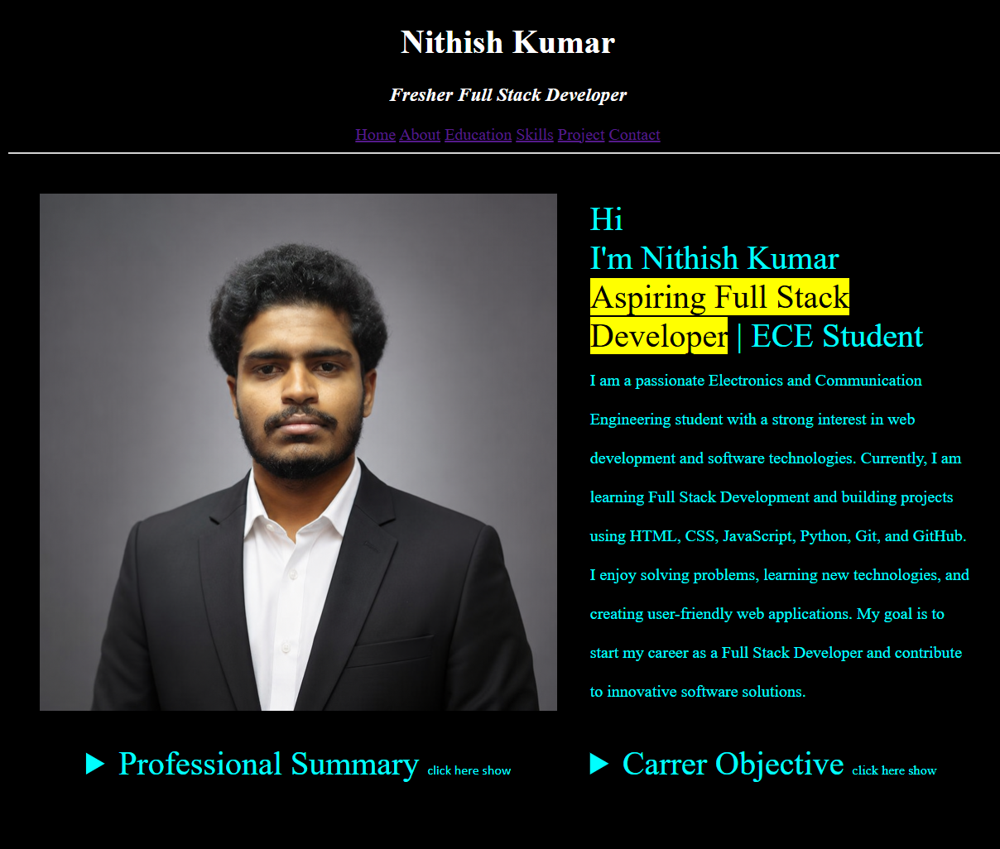
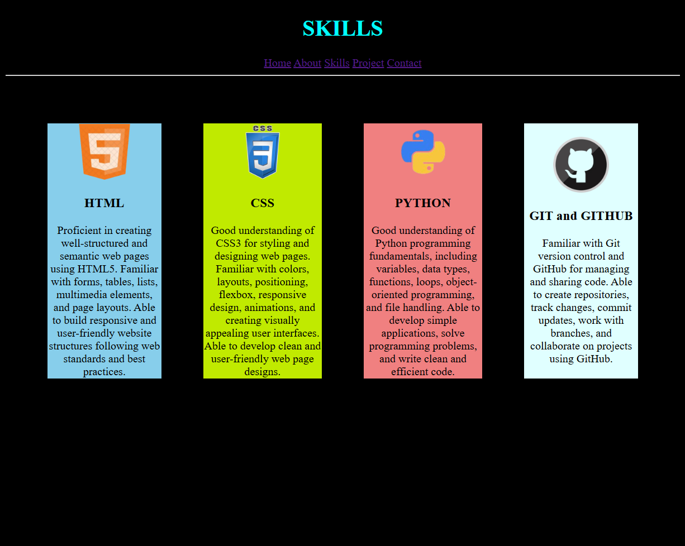
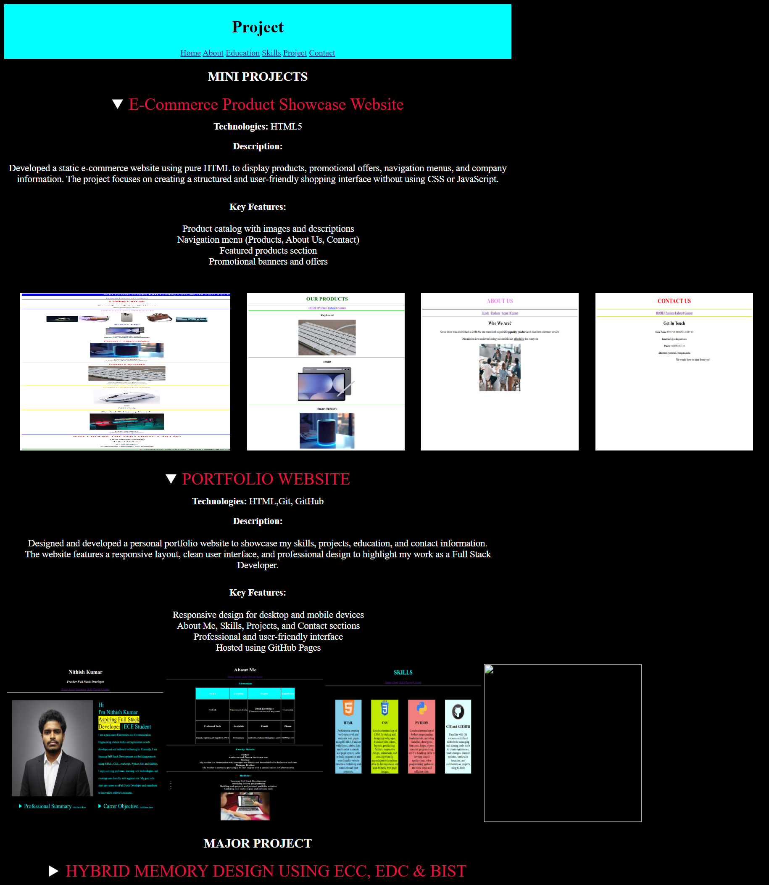

PORTFOLIO WEBSITE
Technologies: HTML,Git, GitHubDescription:
Designed and developed a personal portfolio website to showcase my skills, projects, education, and contact information.
The website features a responsive layout, clean user interface, and professional design to highlight my work as a Full Stack Developer.
- Responsive design for desktop and mobile devices
- About Me, Skills, Projects, and Contact sections
- Professional and user-friendly interface
- Hosted using GitHub Pages
 |
 |
 |
 |